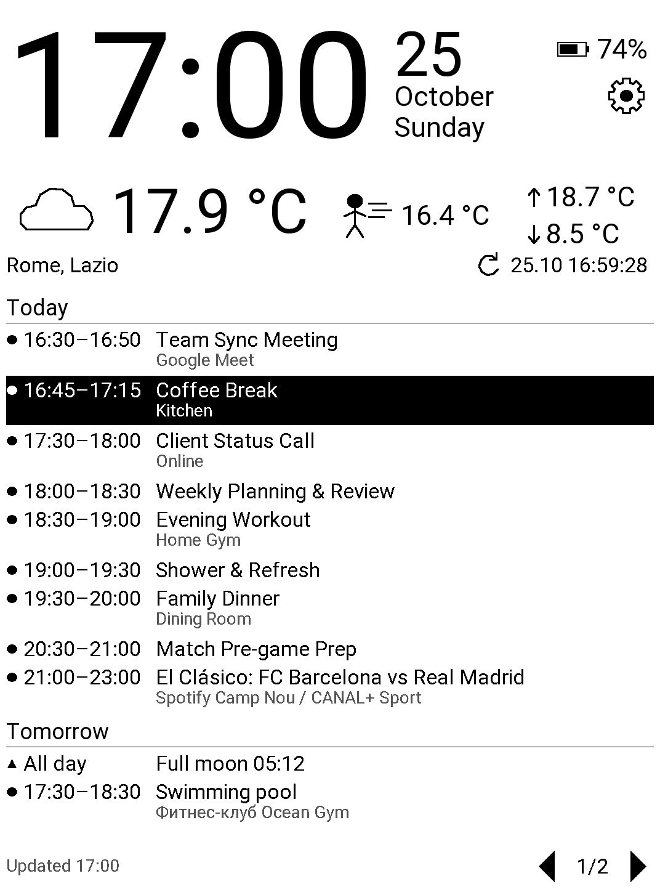
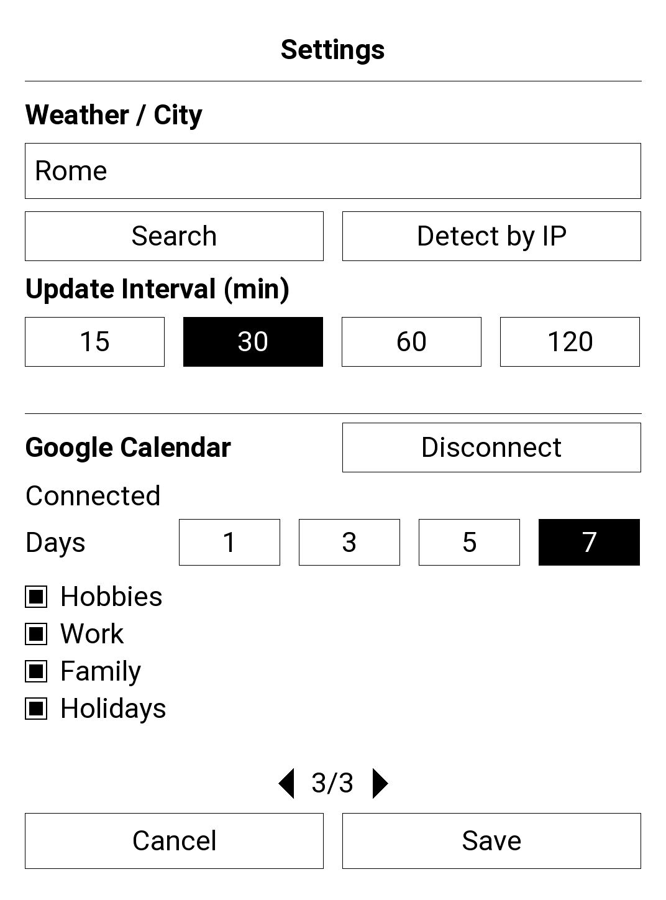

InkDay is a free, open-source application for PocketBook Verse Pro e-reader. It turns the reader into a quiet information screen for a desk or a wall: a large clock and date, battery level, current weather and your upcoming Google Calendar events. The e-ink screen keeps the picture without power, and InkDay updates it rarely and partially, so the reader lasts for days.


Features
- Large clock and date in the reader's language.
- Current weather, "feels like" temperature and today's minimum and maximum from Open-Meteo.
- Google Calendar events for the next 1 to 7 days, grouped by day, with the event in progress highlighted.
- Night mode, 11 interface languages, offline cache of the last data.
Why InkDay asks for access to Google Calendar
When you press Connect in InkDay settings, Google asks you to allow InkDay to
see and download your calendars (read-only access,
calendar.readonly). InkDay needs it only to show the list of your
calendars, so you can pick which ones to display, and the events of the selected
calendars on the dashboard.
InkDay never changes, creates or deletes anything in your calendar. Your calendar data goes directly from Google to your e-reader and is stored only there. There is no InkDay server. You can disconnect at any time in InkDay settings or in your Google Account permissions. See the privacy policy for details.
Installation
- Unzip
InkDay.zipand connect the reader to a computer over USB. - Copy
InkDay.appto theapplicationsfolder in the root of the reader's storage. - Disconnect the reader and start InkDay from the Applications menu.
Previous versions and release notes are on the releases page. Building from source and other details are described in the README.